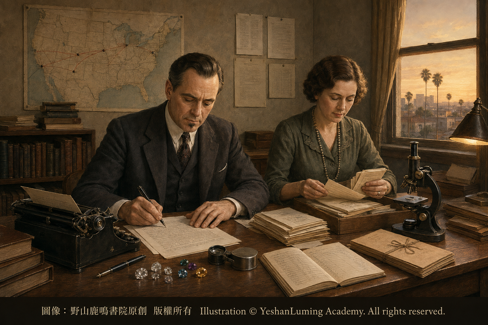

GIA的誕生·一個機構如何改變世界The Birth of GIA · How One Institution Changed the World
The World of Gemstones · Diamond SeriesThe Birth of GIA · How One Institution Changed the World
The World of Gemstones · Diamond SeriesGIA的誕生·一個機構如何改變世界
寶石世界·鑽石篇
寶石世界·鑽石篇（119）The World of Gemstones · Diamond Series (119)
如果說4C是一種描述鑽石品質的共同語言，那麼GIA，就是創造並推廣這種現代語言最重要的機構。
在今天的鑽石世界裡，無論是寶石學教育、鑽石分級、寶石鑑定，還是實驗室研究，都繞不開GIA這個名字。但是在GIA出現以前，鑽石市場並沒有一套受到全球廣泛接受的統一品質語言。
不同地區、不同公司和不同珠寶商，往往使用各自的名稱與方法描述鑽石。有人使用A、AA、AAA等字母評價顏色，有人使用「最白」「藍白」「頂級白」等缺乏明確邊界的商業名稱。
這些詞匯聽起來十分漂亮，彼此之間卻沒有相關的統一標準。同一個名稱，在不同商家手中，可能代表完全不同的品質。
珠寶商的知識主要來自個人經驗、家族傳承和師徒教授。經驗豐富而誠實的珠寶商，或許可以作出相當可靠的判斷；但是對普通消費者來說，卻很難知道一顆鑽石的品質究竟如何，也很難比較不同商家所出售的鑽石。
購買鑽石，因而帶有很大的資訊不對稱與不確定性。這種局面，到了20世紀才開始發生根本改變。
GIA的全稱是Gemological Institute of America，中文通常譯為「美國寶石學院」。它由羅伯特·M·希普利（Robert M. Shipley）於1931年在美國洛杉磯創立。
希普利原本是一名零售珠寶商。他在長期從業過程中逐漸認識到，美國珠寶行業缺少系統的寶石學教育，許多珠寶商雖然每天買賣鑽石與彩色寶石，卻沒有接受過礦物學、光學和寶石鑑定方面的專業訓練。
寶石本身具有可以觀察、測試、分析和比較的物理與光學特徵。但是在當時，這些知識還沒有在美國珠寶行業中形成廣泛而系統的教育體系。這種知識上的缺口，容易造成誤判、混亂與不透明，也使消費者只能把信任寄託在個別珠寶商的經驗和聲譽上。
如果說4C是一種描述鑽石品質的共同語言，那麼GIA，就是創造並推廣這種現代語言最重要的機構。
在今天的鑽石世界裡，無論是寶石學教育、鑽石分級、寶石鑑定，還是實驗室研究，都繞不開GIA這個名字。但是在GIA出現以前，鑽石市場並沒有一套受到全球廣泛接受的統一品質語言。
不同地區、不同公司和不同珠寶商，往往使用各自的名稱與方法描述鑽石。有人使用A、AA、AAA等字母評價顏色，有人使用「最白」「藍白」「頂級白」等缺乏明確邊界的商業名稱。
這些詞匯聽起來十分漂亮，彼此之間卻沒有相關的統一標準。同一個名稱，在不同商家手中，可能代表完全不同的品質。
珠寶商的知識主要來自個人經驗、家族傳承和師徒教授。經驗豐富而誠實的珠寶商，或許可以作出相當可靠的判斷；但是對普通消費者來說，卻很難知道一顆鑽石的品質究竟如何，也很難比較不同商家所出售的鑽石。
購買鑽石，因而帶有很大的資訊不對稱與不確定性。這種局面，到了20世紀才開始發生根本改變。
GIA的全稱是Gemological Institute of America，中文通常譯為「美國寶石學院」。它由羅伯特·M·希普利（Robert M. Shipley）於1931年在美國洛杉磯創立。
希普利原本是一名零售珠寶商。他在長期從業過程中逐漸認識到，美國珠寶行業缺少系統的寶石學教育，許多珠寶商雖然每天買賣鑽石與彩色寶石，卻沒有接受過礦物學、光學和寶石鑑定方面的專業訓練。
寶石本身具有可以觀察、測試、分析和比較的物理與光學特徵。但是在當時，這些知識還沒有在美國珠寶行業中形成廣泛而系統的教育體系。這種知識上的缺口，容易造成誤判、混亂與不透明，也使消費者只能把信任寄託在個別珠寶商的經驗和聲譽上。
希普利由此產生了一個影響深遠的想法：
寶石知識不應該只是少數商人的祕密，也不應該只靠師徒之間口傳心授。它應該成為一門可以學習、可以驗證，也可以通過科學方法不斷發展的專業學科。
基於這一理念，1931年，希普利與妻子碧翠絲在洛杉磯創立了GIA。

Click to enlarge
最初的GIA規模很小，甚至可以說是從一間公寓開始的。它並不是今天人們所熟悉的大型寶石實驗室，而首先是一所教育與研究機構。它最重要的任務，是編寫寶石學課程，向珠寶從業者教授寶石的性質、鑑別方法與品質評價知識。
希普利親自到美國各地拜訪珠寶商，推廣寶石學教育；妻子碧翠絲則留在洛杉磯，承擔辦公室管理、課程聯絡和日常行政工作。
在推廣函授教育的同時，GIA也逐步發展實驗室服務、寶石儀器與研究工作。
1934年，GIA創辦專業期刊《Gems & Gemology》，為寶石學研究提供一個可以公開發表、討論與積累知識的平台。同一年，希普利又創立美國寶石學會，也就是American Gem Society，簡稱AGS，希望把寶石學知識、商業倫理與消費者信任結合起來。
教育、研究、儀器、實驗室服務與行業倫理，逐漸構成了希普利改革美國珠寶業的完整理想。
GIA對鑽石世界最重要的貢獻之一，就是建立了後來廣泛用於全球鑽石行業的品質語言。
希普利為了幫助學生記憶和理解鑽石品質因素，推廣了Carat、Color、Clarity和Cut這四個以英文字母C開頭的概念，也就是後來聞名世界的4C。
但是，提出4C這個簡明概念，並不等於現代鑽石分級體系已經立即完成。1940年加入GIA的理查德·T·利迪寇特（Richard T. Liddicoat）及其同事，在希普利奠定的教育基礎上，繼續研究如何更加準確、一致地描述鑽石品質。
1953年，在利迪寇特主持下，GIA正式建立現代鑽石分級體系，其中包括D至Z顏色等級、淨度等級，以及相應的觀察條件、術語和分級方法。從此，4C不再只是一組方便記憶的名稱，而逐漸成為具有明確尺度與操作程序的國際鑽石品質語言。
按照GIA的理念，鑽石品質應當儘可能在標準化條件下進行描述，而不能只依賴個人印象或含糊的商業名稱。
例如，鑽石顏色分級需要使用規定的光源、中性背景、標準比色石和統一的觀察方式；淨度分級則需要在十倍放大條件下，觀察內含物與表面特徵的位置、大小、數量、性質和明顯程度。
這些程序看似只是技術細節，實際上卻深刻改變了鑽石市場。
鑽石是大自然形成的產物。不同鑽石因為形成環境、晶體生長、微量元素、晶格缺陷和後期地質過程的差異，呈現出千變萬化的顏色、淨度、形態與內部特徵。
GIA所做的，是以寶石學方法觀察這些天然差異，再把其中與品質有關的特徵，轉化成可以記錄、比較和交流的分級語言。於是，不同國家、不同文化背景和不同交易環節的人，可以使用同一套基本術語來描述鑽石。
這種標準化大幅提高了鑽石品質資訊的透明度，也為全球鑽石貿易建立了更加穩定的交流基礎。
隨著實驗室業務的發展，GIA開始出具鑽石分級報告。市場上經常把這種報告俗稱為「GIA證書」，但是嚴格說來，這種稱呼並不準確。GIA不「認證」任何一顆鑽石，正式出具的是Diamond Grading Report，也就是鑽石分級報告。
分級報告記錄的是鑽石在送檢時所呈現的品質與可識別特徵，不是對鑽石價值的估價，也不是對未來價格的保證。
但是，一份由獨立實驗室依據統一程序出具的分級報告，可以使買賣雙方更清楚地瞭解鑽石的品質，從而減少單純依靠銷售者口頭描述所造成的資訊差異。
1988年，GIA曾對舉世聞名的45.52克拉「希望鑽石」進行分級研究。許多進入重要收藏、博物館和國際拍賣市場的鑽石，也會經過專業實驗室分析。這說明GIA建立的寶石學方法，既服務於普通珠寶交易，也可以用於研究世界級名鑽。
除了鑽石之外，GIA在彩色寶石、珍珠、寶石處理和實驗室培育寶石等領域，也具有重要影響。
不過，彩色寶石的品質評價與鑽石4C並不完全相同。GIA對彩色寶石的重要工作，主要包括品種鑑定、天然或實驗室培育屬性判斷、處理檢測，以及在符合條件時研究地理來源等。
這些分析需要結合顯微觀察、折射率、光譜、化學成分和其他先進儀器測試，而不能只憑顏色與外觀作出判斷。
GIA使寶石學逐漸從高度依賴個人經驗的傳統技藝，發展成結合礦物學、物理學、化學、地質學與光學的現代專業體系。對於從業者而言，GIA不僅是實驗室和研究機構，也是重要的教育機構與知識來源。
它所建立的課程體系，為世界各地培養了大量珠寶與寶石行業專業人才，使越來越多從業者能夠使用規範的方法觀察、鑑別和描述寶石。
從更宏觀的角度看，GIA的影響並不只在於幾套儀器、幾張分級報告或者幾個等級名稱。它真正改變的，是人們理解寶石的方式。
在現代寶石學形成以前，寶石常常被神話、傳說、商業名稱和個人經驗所包圍；在現代寶石學建立以後，寶石仍然美麗而神祕，卻也成為可以被觀察、測試、分析和理解的自然產物。
也許可以這樣說：GIA所做的，不只是建立一套鑽石標準，而是幫助一個古老的行業，建立現代科學的語言。從那以後，人類欣賞寶石，不再只依靠傳說與感覺，也開始依靠知識與證據。
（未完待續）
If the 4Cs are a common language for describing diamond quality, then GIA is the institution that played the most important role in creating and promoting that modern language.
In today’s diamond world, whether the subject is gemological education, diamond grading, gem identification, or laboratory research, it is almost impossible to avoid the name GIA. Yet before GIA appeared, the diamond market had no unified language of quality that was broadly accepted throughout the world.
Different regions, companies, and jewelers often used their own names and methods to describe diamonds. Some used letters such as A, AA, and AAA to evaluate color, while others relied upon commercial expressions such as “finest white,” “blue white,” and “top white,” none of which had clearly defined boundaries.
These terms sounded impressive, but there were no corresponding uniform standards behind them. The same designation, when used by different merchants, could represent entirely different levels of quality.
Jewelers acquired most of their knowledge through personal experience, family tradition, and master-apprentice instruction. An experienced and honest jeweler might be capable of making a reasonably reliable judgment, but ordinary consumers had little way of knowing the true quality of a diamond or of comparing diamonds offered by different merchants.
Buying a diamond therefore involved a considerable degree of information asymmetry and uncertainty. It was not until the twentieth century that this situation began to change fundamentally.
GIA stands for the Gemological Institute of America. It was founded in Los Angeles in 1931 by Robert M. Shipley.
Shipley had originally been a retail jeweler. Over the course of his career, he gradually realized that the American jewelry industry lacked a systematic form of gemological education. Although many jewelers bought and sold diamonds and colored stones every day, they had never received professional training in mineralogy, optics, or gem identification.
Gems possess physical and optical properties that can be observed, tested, analyzed, and compared. At the time, however, this knowledge had not yet been developed into a broad and systematic educational structure within the American jewelry industry. This gap in knowledge readily led to misjudgment, confusion, and a lack of transparency, leaving consumers with little choice but to place their trust in the experience and reputation of individual jewelers.
If the 4Cs are a common language for describing diamond quality, then GIA is the institution that played the most important role in creating and promoting that modern language.
In today’s diamond world, whether the subject is gemological education, diamond grading, gem identification, or laboratory research, it is almost impossible to avoid the name GIA. Yet before GIA appeared, the diamond market had no unified language of quality that was broadly accepted throughout the world.
Different regions, companies, and jewelers often used their own names and methods to describe diamonds. Some used letters such as A, AA, and AAA to evaluate color, while others relied upon commercial expressions such as “finest white,” “blue white,” and “top white,” none of which had clearly defined boundaries.
These terms sounded impressive, but there were no corresponding uniform standards behind them. The same designation, when used by different merchants, could represent entirely different levels of quality.
Jewelers acquired most of their knowledge through personal experience, family tradition, and master-apprentice instruction. An experienced and honest jeweler might be capable of making a reasonably reliable judgment, but ordinary consumers had little way of knowing the true quality of a diamond or of comparing diamonds offered by different merchants.
Buying a diamond therefore involved a considerable degree of information asymmetry and uncertainty. It was not until the twentieth century that this situation began to change fundamentally.
GIA stands for the Gemological Institute of America. It was founded in Los Angeles in 1931 by Robert M. Shipley.
Shipley had originally been a retail jeweler. Over the course of his career, he gradually realized that the American jewelry industry lacked a systematic form of gemological education. Although many jewelers bought and sold diamonds and colored stones every day, they had never received professional training in mineralogy, optics, or gem identification.
Gems possess physical and optical properties that can be observed, tested, analyzed, and compared. At the time, however, this knowledge had not yet been developed into a broad and systematic educational structure within the American jewelry industry. This gap in knowledge readily led to misjudgment, confusion, and a lack of transparency, leaving consumers with little choice but to place their trust in the experience and reputation of individual jewelers.
From this realization, Shipley developed an idea of far-reaching importance:
Gemological knowledge should not remain the secret of a small number of merchants, nor should it be transmitted solely by word of mouth from master to apprentice. It should become a professional discipline that could be learned, verified, and continuously advanced through scientific methods.
Guided by this conviction, Shipley and his wife, Beatrice, founded GIA in Los Angeles in 1931.
Click to enlarge
GIA was very small in its earliest days and could even be said to have begun in an apartment. It was not yet the large gemological laboratory familiar to people today, but was first and foremost an educational and research institution. Its most important task was to develop gemology courses and teach members of the jewelry trade about the properties, identification, and quality evaluation of gems.
Shipley personally traveled throughout the United States, visiting jewelers and promoting gemological education, while Beatrice remained in Los Angeles, managing the office, corresponding about courses, and handling the institution’s daily administrative work.
While expanding its correspondence education, GIA also gradually developed laboratory services, gemological instruments, and research programs.
In 1934, GIA founded the professional journal Gems & Gemology, creating a platform where gemological research could be published, discussed, and accumulated as a body of knowledge. That same year, Shipley also established the American Gem Society, or AGS, with the hope of uniting gemological knowledge, business ethics, and consumer confidence.
Education, research, instrumentation, laboratory services, and professional ethics gradually came together to form Shipley’s complete vision for reforming the American jewelry industry.
One of GIA’s most important contributions to the diamond world was the establishment of a language of quality that would later become widely used throughout the global diamond industry.
To help students remember and understand the principal factors of diamond quality, Shipley promoted four concepts beginning with the letter C: Carat, Color, Clarity, and Cut. These became the world-renowned 4Cs.
The introduction of the 4Cs as a clear and memorable concept, however, did not mean that the modern diamond grading system was immediately complete. Richard T. Liddicoat, who joined GIA in 1940, and his colleagues continued to study how diamond quality could be described with greater accuracy and consistency, building upon the educational foundation laid by Shipley.
In 1953, under Liddicoat’s leadership, GIA formally established the modern diamond grading system, including the D-to-Z color scale, the clarity scale, and the corresponding viewing conditions, terminology, and grading procedures. From that point onward, the 4Cs were no longer merely a group of convenient names, but gradually became an international language of diamond quality supported by clearly defined scales and operating procedures.
According to GIA’s principles, diamond quality should be described under standardized conditions whenever possible, rather than being based solely upon personal impressions or vague commercial terminology.
Diamond color grading, for example, requires prescribed lighting, a neutral background, master stones, and a consistent viewing method. Clarity grading is performed under ten-power magnification, with attention given to the location, size, number, nature, and relief of inclusions and surface features.
These procedures might appear to be merely technical details, but in reality they profoundly changed the diamond market.
Diamonds are products of nature. Differences in their formation environments, crystal growth, trace elements, lattice defects, and subsequent geological histories produce an extraordinary variety of colors, clarity characteristics, forms, and internal features.
What GIA did was to examine these natural differences through gemological methods and translate the characteristics related to quality into a grading language that could be recorded, compared, and communicated. As a result, people from different countries, cultural backgrounds, and stages of the trade could use the same basic terminology to describe diamonds.
This standardization greatly increased the transparency of diamond-quality information and created a more stable foundation for communication throughout the global diamond trade. As its laboratory operations developed, GIA began issuing diamond grading reports. The market often refers to these reports as “GIA certificates,” but strictly speaking, that expression is inaccurate. GIA does not “certify” any diamond. The document it formally issues is a Diamond Grading Report.
A grading report records the quality and identifying characteristics displayed by a diamond at the time it is submitted for examination. It is not an appraisal of the diamond’s monetary value, nor is it a guarantee of its future price.
Nevertheless, a grading report issued by an independent laboratory according to standardized procedures can give buyers and sellers a clearer understanding of a diamond’s quality, thereby reducing the differences in information that arise when they must rely solely upon a salesperson’s verbal description.
In 1988, GIA graded and studied the world-famous 45.52-carat Hope Diamond. Many diamonds entering major collections, museums, and international auctions are likewise analyzed by professional laboratories. This demonstrates that the gemological methods established by GIA serve not only ordinary jewelry transactions, but also the study of the world’s most celebrated diamonds.
Beyond diamonds, GIA has also exerted an important influence in the fields of colored stones, pearls, gem treatments, and laboratory-grown gems.
The quality evaluation of colored stones, however, is not identical to the diamond 4Cs. GIA’s important work with colored stones primarily includes identifying gem species and varieties, determining whether a gem is natural or laboratory-grown, detecting treatments, and, when appropriate conditions are met, investigating geographic origin.
Such analyses require a combination of microscopic observation, refractive-index testing, spectroscopy, chemical analysis, and other advanced instrumental methods. They cannot be based solely upon color and outward appearance.
GIA helped gemology evolve from a traditional craft heavily dependent upon personal experience into a modern professional discipline combining mineralogy, physics, chemistry, geology, and optics. For members of the trade, GIA is not only a laboratory and research institution, but also an important educational institution and source of knowledge.
Its educational system has trained large numbers of jewelry and gem professionals around the world, enabling more and more members of the trade to observe, identify, and describe gems through standardized methods.
From a broader perspective, GIA’s influence lies not merely in a collection of instruments, a number of grading reports, or a set of grade names. What it truly changed was the way people understand gems.
Before the emergence of modern gemology, gems were often surrounded by mythology, legend, commercial terminology, and personal experience. After modern gemology was established, gems remained beautiful and mysterious, but they also became natural materials that could be observed, tested, analyzed, and understood.
Perhaps it can be said this way: GIA did more than establish a set of diamond standards. It helped an ancient industry acquire the language of modern science. From that time forward, humanity no longer appreciated gems through legend and feeling alone, but increasingly through knowledge and evidence as well.
(To be continued)